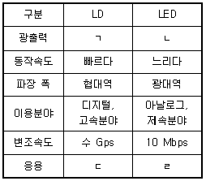
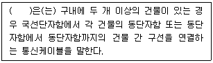

통신설비기능장 (2022-03-12 기출문제)
1과목: 임의 과목 구분(20문항)
1. 유·무선 네트워크를 통해서 디지털 콘텐츠(영상, 음악, 사진 등)를 가전기기(TV, 스마트폰, 컴퓨터) 간에 자유롭게 공유할 수 있도록 하는 기술은?
- DLNA
- LMDS
- CMTS
- HPA
(정답률: 89%)

2. 전화선의 채널대역폭이 6,000[Hz]이고 채널의 출력 S/N=10,000인 경우 통신용량은? (단, log210=3.322로 하고 근사치로 계산.)
- 18,063 [bit/sec]
- 19,063 [bit/sec]
- 79,728 [bit/sec]
- 79,968 [bit/sec]
(정답률: 83%)
3. 100[W] 전력의 반송파를 사용하여 신호를 변조도 80[%]로 진폭 변조하여 전송하고자 할 때 소요되는 총 전력은 몇 [W] 인가?
- 80
- 100
- 132
- 140
(정답률: 70%)
4. 디지털 변조방식에서 반송파의 진폭을 변화시키는 ASK의 특징이 아닌 것은?
- 동기, 비동기 ASK 검파가 가능하다.
- 비동기 검파시 정합 여파기를 사용한다.
- 대역폭은 기저대역 신호의 최대주파수의 2배가 된다.
- 진폭변조이므로 페이딩과 잡음의 영향에 약하여 오류 발생 확률이 크다.
(정답률: 72%)
5. 다음 중 위상 등화기(보상기)가 반드시 필요하지 않은 경우는?
- 장하 케이블
- 동축 케이블을 이용한 영상 신호 전송
- 나선로를 사용한 반송 전화
- PCM 중계 회선 선로
(정답률: 73%)
6. 다음 중 양자화 잡음의 개선책이 아닌 것은?
- 양자화 계단을 크게 한다.
- 양자화 계단수를 증가시킨다.
- 비선형 양자화를 행한다.
- 압신기를 사용한다.
(정답률: 86%)
7. 다음 중 백색 잡음(White Noise)에 대한 설명으로 알맞지 않는 것은?
- 백색잡음은 신호에 더해지는 형태이다.
- 레일리 분포(Rayleigh Distribution) 특성을 갖는다.
- 열 잡음(Thermal Noise)이 대표적인 예이다.
- 주파수 전 대역에 걸쳐 전력스펙트럼 밀도가 거의 일정하다.
(정답률: 82%)
8. 다음 중 디지털 신호를 있는 그대로 다른 펄스 파형으로 전송하는 방식은 무엇인가?
- 베이스 밴드 방식
- 광대역 전송 방식
- 협대역 전송 방식
- 반송 대역 전송 방식
(정답률: 88%)
9. 다음 중 유선전화 선로시스템에서 사용하는 보안장치가 아닌 것은?
- 피뢰기
- 퓨즈
- 열선륜
- 포토카플러
(정답률: 81%)
10. 전화 교환국의 전자교환시스템(Electronic Switching System)시설에서 유지보수용으로 사용하는 프로그램이 아닌 것은?
- 호 처리 프로그램
- 장애 처리 프로그램
- 장애 진단 프로그램
- 운용 관리 프로그램
(정답률: 80%)
11. 다음 중 AM 수신기의 보조회로가 아닌 것은?
- 자동이득 제어회로 (AGC)
- 자연이득 제어회로 (DAGC)
- 자동잡음 억제회로 (ANL)
- 순시편이 제어회로 (IDC)
(정답률: 70%)
12. 다음 중 PLL(Phase Locked Loop)의 주요 구성이 아닌 것은?
- AGC
- VCO
- LPF
- 위상비교기
(정답률: 80%)
13. UHF 주파수 대역의 파장 범위는?
- 10 ~ 100[m]
- 1 ~ 10[cm]
- 0.1 ~ 1[m]
- 100 ~ 1000[cm]
(정답률: 80%)
14. 수신기의 초단 증폭기 이득이 10, 잡음지수가 2이고, 후단 증폭기의 이득이 20, 잡음지수가 4 일 때 종합잡음 지수는?
- 0.7
- 1.2
- 2.3
- 4.1
(정답률: 72%)
15. 위성통신 지구국의 설명으로 틀린 것은?
- 중계 회선용과 가입자 전용 회선용 등의 용도에 따라 안테나, 위성 송·수신 시스템 및 신호처리 시스템으로 대별된다.
- 대기권 밖에 있는 우주국과 통신을 실시하기 위해 지구국의 표면상에 설치된 무선국이다.
- 지구국의 방송 통신 시스템은 국내 통신 회선으로부터 온 신호를 다중화 시스템에 의하여 배열하고, 송신기에 주파수를 변조를 시킨 다음 대전력 증폭하여 안테나에 급전하여 위성에 송출한다.
- 중계기를 중심으로 버스계와 전력계 및 안테나계로 구성된다.
(정답률: 67%)
16. 다음 중 이동통신 기지국 제어장치(BCS)의 Vocoder/Transcoder (음성 부호화 및 복호화기)에 대한 설명으로 틀린 것은?
- 교환기와 Network Interface와의 정합을 담당하는 서브시스템이다.
- 이동국 착·발신 신호에 대해 음성부호화와 복호화 기능을 수행한다.
- 고정국 착·발신 신호에 대해 음성부호화와 복호화 기능을 수행한다.
- 네트워크 발생 및 감지기능을 제공한다.
(정답률: 78%)
17. 다음 중 SSB 송신기가 DSB 송신기와 비교할 때 장·단점이 아닌 것은?
- S/N비가 개선된다.
- 회로구성이 간단하다.
- 비화통신이 가능하다.
- 점유주파수 대역폭이 좁다.
(정답률: 78%)
18. 다음 중 전파에 대한 설명으로 적합하지 않은 것은?
- 전파는 횡파이며 평명파이다.
- 전파의 속도는 투자율이나 유전율이 클수록 속도가 빨라진다.
- 전파는 빛의 성질과 유사하다.
- 전파는 전계와 자계가 수직으로 존재한다.
(정답률: 79%)
19. 각각 100[kHz]의 대역폭을 갖는 다섯 개의 채널을 함께 다중화해서 보낸다. 만일 서로 간의 간섭을 피하기 위해 채널 사이에 10[kHz]의 보호 대역이 필요하다면 최소 얼마 만큼의 대역폭이 필요한가?
- 40[kHz]
- 80[kHz]
- 500[kHz]
- 540[kHz]
(정답률: 83%)
20. 다음 중 GPS(Global Positioning System) 위성에 대한 설명으로 옳지 않은 것은?
- 위성으로부터 전파를 수신해서 수신점의 위치, 이동 방향, 속도를 측정할 수 있다.
- 4개의 궤도면에 12기 정지위성을 구성되어 있으며 4기의 위성으로부터 신호를 수신하여 이용한다.
- 위치 정보와 지도 정보를 조합해서 자동차용 자동 운항 시스템에 이용된다.
- 위성에 탑재된 세슘 원자 시계를 기준으로 동기를 맞추고 위치 정보를 계산한다.
(정답률: 89%)
2과목: 임의 과목 구분(20문항)
21. 다음 중 대칭키 암호화 방식을 사용하여 10명의 사용자가 정보를 안전하게 교환하는 경우에 필요한 비밀키의 개수는 얼마인가?
- 18개
- 20개
- 45개
- 90개
(정답률: 82%)
22. 다음 중 2.4GHz 무선 랜 표준이 아닌 것은?
- IEEE 802.11
- IEEE 802.11a
- IEEE 802.11b
- IEEE 802.11g
(정답률: 69%)
23. 다음 중 정보보호 관리체계의 위험 관리 5단계 과정 중 3단계에 해당되는 것은?
- 전략 및 계획 수립
- 정보보호 대책 선정
- 위험평가
- 위험구성요소 분석
(정답률: 82%)
24. IPv4 C클래스에서 네트워크 식별자를 27비트만 사용한다면 서브넷 마스크는?
- 255.255.255.224
- 255.255.255.240
- 255.255.255.248
- 255.255.255.255
(정답률: 88%)
25. CSMA/CD는 LAN에서 사용되는 매체접근제어 메커니즘 방법 중 하나이다. 다음 중 CSMA/CD의 표준으로 맞는 것은?
- IEEE 802.11a
- IEEE 802.11b
- IEEE 802.3
- IEEE 802.4
(정답률: 76%)
26. OSI 7계층 참조 모델 중 네트워크를 연결하는데 필요한 데이터 전송과 교환 등 논리적 기능과 관리 규정에 관련이 깊은 계층은?
- 데이터 링크 계층
- 네트워크 계층
- 트랜스포트 계층
- 세션계층
(정답률: 82%)
27. 다음 중 네트워크 아키텍쳐의 목적에 해당되지 않은 것은?
- 지리적으로 분산된 컴퓨터나 단말간의 정보교환
- 컴퓨터 자원의 개별 이용
- 컴퓨터 시스템의 신뢰성 향상
- 분산처리에 따른 비용 성능비의 향상
(정답률: 73%)
28. 다음은 OSI 7Layer 계층 중 전송계층(Transport layer) 기능과 관련이 없는 것은?
- 프로그램간 연결 설정
- 가상회선 제공
- TCP/IP를 이용한 응용프로그램
- 신뢰성 보장 및 순서제어 보장
(정답률: 79%)
29. 다음 중 근거리 통신망(Local Area Network)에 사용하는 전송 매체가 아닌 것은?
- 꼬임선
- 평행 나선 케이블
- 동축 케이블
- 광섬유
(정답률: 85%)
30. 다음 중 IPv 6의 주소 길이로 맞는 것은?
- 32[bit]
- 64[bit]
- 128[bit]
- 196[bit]
(정답률: 85%)
31. 광섬유의 규격화 주파수(Normalized Frequency)에 대한 설명으로 옳은 것은?
- 규격화 주파수 값은 파장이 커지면 커진다.
- 규격화 주파수 값은 굴절률과 무관하다.
- 규격화 주파수 값을 작게 만들려면 코어 반경이 작아야 한다.
- 광섬유 단일모드가 되기 위해서는 규격화 주파수 V가 V＞2.4⑤ 가 되야 한다.
(정답률: 76%)
32. 다음 중 광케이블 코어의 굴절률 분포에 따른 구분에 속하지 않은 것은?
- 계단형 광섬유
- 경사형 광섬유
- 언덕형 광섬유
- 삼각형 광섬유
(정답률: 62%)
33. 다음 중 케이블 선로에서'장하'란 무엇을 의미하는가?
- R를 첨가하는 것
- L을 첨가하는 것
- C을 첨가하는 것
- G를 첨가하는 것
(정답률: 84%)
34. 다음 중 광 커넥터의 요구사항으로 적합한 것은?
- 접속손실이 커야 한다.
- 내구성이 있어야 한다.
- 주파수 변화의 영향이 커야 한다.
- 조립이 복잡하여야 한다.
(정답률: 90%)
35. 다음 중 광케이블의 분류에서 용도별 분류에 적합하지 않은 것은?
- 관로용
- 특수용
- 해저용
- 직매용
(정답률: 82%)
36. 시내선로에 사용되는 케이블로서 심선의 절연체는 폴리에틸렌을 사용하고 모든 심선에 착색이 되어 있어 식별이 가능하며 외피는 폴리에틸렌을 입힌 것과 알루미늄 테이프 위에 폴리에틸렌을 입힌 알페스형이 있는 케이블은 무엇인가?
- FS 케이블
- CCP 케이블
- PVC 케이블
- PIC 케이블
(정답률: 82%)
37. 다음 표에서 광통신을 하기 위한 발광소자인 LD(Laser Diode)와 LED(Laser Emitting Diode)의 특성에 대해 알맞은 것은?

- ㄱ : 낮다, ㄴ : 높다, ㄷ : 단거리용, ㄹ : 장거리용
- ㄱ : 높다, ㄴ : 낮다, ㄷ : 단거리용, ㄹ : 장거리용
- ㄱ : 높다, ㄴ : 낮다, ㄷ : 장거리용, ㄹ : 단거리용
- ㄱ : 낮다, ㄴ : 높다, ㄷ : 장거리용, ㄹ : 단거리용
(정답률: 80%)
38. 어느 전송 선로의 입력측 전압이 9[V], 출력측 전압이 0.09[V]였다면 선로의 감쇄량은?
- 0.01[dB]
- 1[dB]
- 20[dB]
- 40[dB]
(정답률: 67%)
39. 어느 2지점 간 포설된 동축케이블의 특성 임피던스를 측정하였더니 개방 임피던스는 36[Ω]이고, 단락 임피던스는 225[Ω]이었다. 이 케이블의 특성 임피던스(Z0)는 얼마인가?
- 25[Ω]
- 75[Ω]
- 90[Ω]
- 250[Ω]
(정답률: 68%)
40. 다음 중 후방 산란법에 의한 광을 검출하는 장비로서 가장 널리 이용되는 것은?
- 오실로스코프
- 레벨미터
- OTDR
- 회로 시험기
(정답률: 90%)
3과목: 임의 과목 구분(20문항)
41. 특성임피던스가 200[Ω]인 동축케이블의 무손실 선로에서 50[Ω]의 부하를 접속할 때 이 선로의 정재파비는?
- 0.6
- 1.2
- 3.2
- 4
(정답률: 85%)
42. 화상회의 시스템에서 사용되는 비디오 형식으로서, NTSC와 PAL 방식의 신호 모두를 쉽게 지원하는 것은?
- MPEG
- H.264
- CIF
- GIF
(정답률: 72%)
43. 플라스틱 광섬유에 대한 설명 중 틀린 것은?
- 코어와 클래딩 부분의 재질을 플라스틱 사용한 광섬유이다.
- 유리 광섬유(GOF)에 비해 전송특성이 미흡하다.
- 소형, 경량으로 취급이 용이하며 고속 전송이 가능하다.
- 유리 광섬유(GOF)보다 전송손실이 작고, 내열성이 더 좋은 장점이 있다.
(정답률: 79%)
44. 75[Ω]계에서 0[dBm]이 되려면 P=1[mW]이다. 전류(I)가 3.65[mA]일 때 부하 양단전압은?
- 0.274[V]
- 1.274[V]
- 0.775[V]
- 1.775[V]
(정답률: 64%)
45. 참값이 100[V]인 접압을 측정하였더니 101.5[V]였다. 오차 백분율로 표시하면 몇 [%]인가?
- 0.15
- 1.5
- 15
- 150
(정답률: 85%)
46. 4위상 변조 방식에 의한 2,400[bit/s] 모뎀에서 단위 펄스의 시간 길이가 T=833×10-6[sec]인 경우 변조 속도는?
- 1,200[baud]
- 2,400[baud]
- 4,800[baud]
- 9,600[baud]
(정답률: 70%)
47. 다음 중 정보통신공사업법에서 정한 용어의 정의로 틀린 것은?
- “정보통신설비”란 유선, 무선, 그 밖의 전기적 방식으로 음성 또는 영상 등의 정보를 저장·제어·처리하거나 송수신하기 위한 유선 설비를 말한다.
- “정보통신공사”란 정보통신설비의 설치 및 유지·보수에 관한 공사와 이에 따르는 부대공사를 말한다.
- “하도급”이란 도급받은 공사의 일부에 대하여 수급인이 제3자와 체결하는 계약을 말한다.
- “정보통신기술자”란 국가기술자격법에 따라 정보통신 관련 분야의 기술자격을 취득한 사람과 정보통신설비에 관한 기술 또는 기능을 가진 사람으로서 과학기술정보통신부장관의 인정을 받은 사람을 말한다.
(정답률: 79%)
48. 다음 중 공사현장에서 사고가 발생하였을 경우 감리원의 조치사항으로 가장 적절한 것은?
- 시공자로 하여금 즉시 필요한 응급조치를 취하도록 하고, 상세경위 및 의견서를 붙여 발주자에게 지체 없이 보고한다.
- 안전관리자로 하여금 필요한 응급조치를 취하도록 하고, 사고 경위를 파악하게 하여 결과가 나오는 즉시 관할 경찰서에 보고 한다.
- 사고발생 즉시 관할 경찰서에 신고하여 사고 경위를 파악하게 하고, 결과는 매 분기별로 취합하여 발주자에게 서면 보고한다.
- 현장에서의 사고는 감리원의 업무영역이 아닌 안전관리자의 책임임으로 별도의 조치는 필요하지 않다.
(정답률: 79%)
49. 다음 홈네트워크 설비(기기) 중 세대내에서 사용되는 홈네트워크 기기들을 유·무선 네트워크로 연결하고 세대망과 단자망 혹은 통신사의 기간망을 상호접속 장치는?
- 원격검침시스템
- 주동출입시스템
- 홈게이트웨이
- 가스 및 개폐감지기
(정답률: 91%)
50. 공사의 목적물 소유자는 공사에 대한 실시·준공설계도서를 언제까지 보관하여야 하는가?
- 공사의 목적물이 착공될 때까지
- 공사의 목적물이 사용전검사를 받을 때까지
- 공사의 목적물이 준공될 때까지
- 공사의 목적물이 폐지될 때까지
(정답률: 84%)
51. 다음 문장의 괄호 안에 들어갈 내용으로 가장 적합한 것은?

- 구내간선 케이블
- 건물간선 케이블
- 수평배선 케이블
- 성형배선
(정답률: 86%)
52. 정보통신기술자가 정보통신공사업법을 위반하여 동시에 두 곳 이상의 공사업체에서 1년 이상 종사한 경우의 업무정지처분기준은?
- 업무정지 3개월
- 업무정지 6개월
- 업무정지 9개월
- 업무정지 1년
(정답률: 79%)
53. 통신관련시설의 접지저항은 10[Ω] 이하를 기준으로 하는데 다음 중 접지저항을 100[Ω] 이하로 할 수 있는 경우가 아닌 것은?
- 선로설비중 선조·케이블에 대하여 일정 간격으로 시설하는 접지
- 국선 수용 회선이 200회선 이상인 주배선반
- 보호기를 설치하지 않은 구내통신단자함
- 철탑이외 전주 등에 시설하는 이동통신용 중계기
(정답률: 89%)
54. 이동통신 구내선로설비공사에 대한 검사기준에서 급전선의 포설 및 철거가 용이하도록 배관의 길이가 얼마인 경우에 접속함을 설치하여야 하는가?
- 10[m] 초과할 경우
- 20[m] 초과할 경우
- 30[m] 초과할 경우
- 40[m] 초과할 경우
(정답률: 72%)
55. 다음 중 방송통신설비의 분계점에 대한 기준으로 잘못된 것은?
- 방송통신설비가 다른 사람의 방송통신설비와 접속되는 경우에는 그 건설과 보전에 관한 책임 등의 한계를 명확하게 하기 위하여 분계점이 설정되어야 한다.
- 사업용 방송통신설비의 분계점은 사업자 상호 간의 합의에 따른다.
- 국선과 구내선의 분계점은 사업용 방송통신설비의 국선접속설비와 이용자 방송통신설비가 마지막으로 접속되는 점으로 한다.
- 사업용 방송통신설비와 이용자 방송통신설비의 분계점은 도로와 택지 또는 공동주택단자의 각 단지와의 경계점으로 한다.
(정답률: 66%)
56. 생산성을 평가하고자 한다. 표준작업방법에 따라 피로와 지연을 수반하며 정상적으로 작업을 수행 할 때 소요되는 기준시간과 현재 실적을 비교 할 것이다. 이 때 그 기준이 되는 시간에 해당되지 않는 것은?
- 정미시간 + 여유시간
- 표준시간
- 정미시간 ×(1 + 여유율)
- 주작업시간 + 부수작업시간
(정답률: 75%)
57. 현품운반에 있어서 간접공의 운반과 가장 관계가 먼 것은?
- 양적으로 클 것
- 운반거리가 길 것
- 슈트나 컨베이어를 이용하여 이동시킬 것
- 계획적으로 운반될 것
(정답률: 78%)
58. 동일한 종류의 제품을 대량 생산하는 산업에서 흔히 볼 수 있는 제조 형태로 20세기 초 포드자동차가 기존의 단속생산시스템을 탈피하고 대량 생산할 수 있도록 컨베이어 시스템을 도입한 것에서 시작된 것은?
- 고정생산시스템
- 단속생산시스템
- 유연생산시스템
- 연속생산시스템
(정답률: 83%)
59. 다음 중 작업방법 연구에 있어서 작업분석에 해당하지 않는 것은?
- 공동작업 분석
- 작업장 배치
- 스톱워치(Stop Watch)법
- 셋업 분석
(정답률: 81%)
60. 다음 중 파레토도에 대한 설명으로 잘못된 것은?
- 계수형 자료에 대한 그래프 표현 방식이다.
- 공정에서 불량의 원인을 찾는 중요한 도구로 사용된다.
- 각각의 측정값을 정확히 확인 할 수 있다.
- 불량품이나 결점 등을 원인 별로 분류하여 그 크기를 표시한다.
(정답률: 60%)